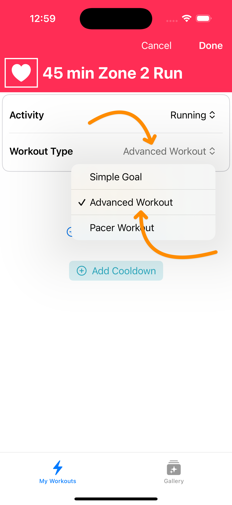

How to do Heart Rate Zone Training Workouts with Apple Watch
This guide will help you set up alerts for heart rate zones to help with your aerobic base training, threshold work, and vO2 max training.
It’s great for running, swimming, cycling, and triathlon training.
Why do zone-based workouts?
Making your workouts specific to a heart rate zone increase your capacity while minimizing recovery time. Maximum benefit with minimum cost.
- Zone 1 = enhanced recovery
- Zone 2 = builds endurance and fat-burning capacity
- Zone 3 = improves aerobic capacity
- Zone 4 = boost lactate threshold
- Zone 5 = increase vO2 max and sprint performance
What you’ll need
- An iPhone running iOS 17 or later
- An Apple Watch running watchOS 10 or later, with your heart rate zones set up
- The free Workout Builder App to set up workouts
Instructions to create zone training workouts for Apple Watch
Step 1 – Open the Workout Builder App and tap the + button to create a new workout
Step 2 – Change the Workout Type to Advanced Workout
Step 3 – Tap Add Workout Block and choose Work Block
Step 4 – Enter your Goal – either distance or time you want to spend in the zone for your workout
Step 5 – Then, tap the Bell Icon alerts button to open the alert editor
Step 6 – Tap Add Alert, then change the Alert Type to Heart Rate Zone
Step 7 – Enter your desired zone in the field, then tap Done
Step 8 – Tap Done to save your new workout
Step 9 – Tap Send to Apple Watch to load the zone training workout onto your paired Apple Watch